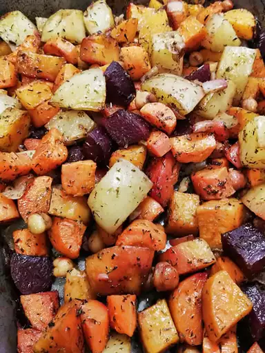

Home ►
Roasted Root Vegetables

Description
A savory combination of carrots, turnips, parsnips, potatoes, and squash, seasoned and roasted with olive oil.
Makes 4 servings
Prep time: 20-30 minutes
Cook time: 50-60 minutes
Ingredients
- 1lb potatoes, peeled and cut into small chunks
- 1 lb butternut squash, peeled and cut into small chunks
- 4 carrots, cut into small chunks
- 4 baby turnips, quartered
- 3 parsnips, cut into small chunks
- 2 garlic cloves, finely chopped
- 2 tbsp rosemary
- 2 tbsp sage
- 2 tbsp thyme
- 2 tbsp parsley
- 3 tbsp olive oil
- Salt and pepper
Steps
- Preheat the oven to 420°F.
- Prepare vegetables (peel and cut as needed).
- Arrange vegetables in a signle layer in a roasting pan.
- Sprinkle vegetables with garlic and seasonings.
- Pour olive oil over vegeatbles.
- Season vegetables with salt and pepper.
- Toss all ingredients together until mixed well and coated with oil.
- Roast vegetables on top rack for 50-60 minutes, until nicely browned. Turn over vegetables halfway through cooking time.
- Carefully remove from oven, season to taste, and serve.